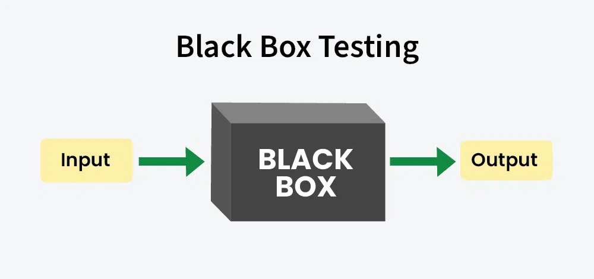
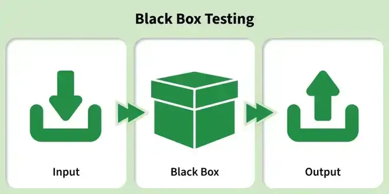
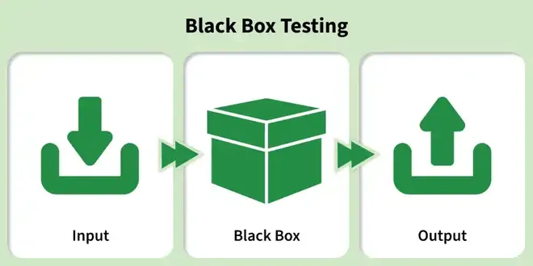

7.16–7.17 Black Box Testing
Black box testing evaluates software functionality without knowledge of internal code structure. It is the primary technique for validation in §8.3 V&V and is applied at integration, system, and acceptance levels within the §2.1 SDLC.


Definition
- Black box testing examines the software's external behaviour — inputs are supplied and outputs are compared against expected results without inspecting source code.
- Test cases are derived from specifications, requirements, and user stories — also called specification-based or behavioural testing.
- The tester treats the system as a black box whose internal workings are unknown and irrelevant to test design.
- Black box testing complements white box testing (§7.15) — together they provide broader defect detection.

Black box testing workflow
- Input: Select or generate test data based on requirements and test design techniques.
- System Under Test (SUT): Apply the input to the software and capture the actual output.
- Compare: Compare actual output against the expected output defined in the test case.
- Pass / Fail: If actual matches expected, the test passes; otherwise log a defect and investigate.
Black box testing techniques
- Equivalence partitioning: Divide input domain into classes of equivalent data; one representative test per class is sufficient because all values in a class are expected to behave the same way.
- Boundary value analysis (BVA): Test values at, just below, and just above the boundaries of equivalence partitions — defects cluster at boundaries.
- Decision table testing: Tabulate combinations of conditions and their corresponding actions to derive systematic test cases for complex business rules.
- State transition testing: Model the system as states and transitions; test valid and invalid state changes triggered by events.
- Use case testing: Derive test scenarios from use cases describing actor–system interactions end to end.
- Error guessing: Apply tester experience and intuition to identify likely defect areas — null inputs, empty strings, division by zero, maximum values.
Test data suite preparation
- A test data suite organises inputs into valid classes, invalid classes, and boundary classes derived from equivalence partitioning.
- Select one representative value from each equivalence class rather than testing every possible input — exhaustive testing is impossible (see §7.4 principle 2).
- Boundary values (minimum, maximum, just inside, just outside) are added to the suite because most defects occur at partition edges.
- A decision table maps combinations of conditions to expected actions — each rule becomes one or more test cases in the suite.
- Cause-effect graphing models input conditions (causes) and output effects as a graph; the graph is converted to a decision table, which is then converted to test cases — this ensures logical combinations are not missed.
Cause-effect graphing → decision table → test cases
- Identify input conditions (causes) and output effects from the specification.
- Draw a cause-effect graph showing logical relationships (AND, OR, NOT) between causes and effects.
- Convert the graph into a decision table with condition stubs, action stubs, and rules.
- Derive one test case per rule (or per meaningful combination) from the decision table.
Types of testing within black box
- Functional testing: Verify that specified features produce correct outputs for given inputs — the core black box activity.
- Regression testing: Re-run black box test suites after changes to confirm existing functionality still works — see §7.9 Regression Testing.
- Non-functional testing: Evaluate quality attributes (performance, usability, security) through external observation without code inspection — see §7.12 Functional vs Non-Functional.
equivalence_partitioning.pseudo
// Requirement: Accept ages 18–65 for account registration
// Valid range: [18, 65]
FUNCTION design_test_suite():
// Step 1 — Define equivalence partitions
partitions = {
"invalid_low": values < 18, // e.g. 0, 5, 17
"valid": 18 <= values <= 65, // e.g. 18, 30, 65
"invalid_high": values > 65 // e.g. 66, 100, 999
}
// Step 2 — Select representative from each class
test_cases = [
{ input: 10, partition: "invalid_low", expected: "reject" },
{ input: 35, partition: "valid", expected: "accept" },
{ input: 80, partition: "invalid_high", expected: "reject" }
]
// Step 3 — Add boundary value analysis
boundary_cases = [
{ input: 17, expected: "reject" }, // just below valid lower bound
{ input: 18, expected: "accept" }, // lower boundary (valid)
{ input: 19, expected: "accept" }, // just above lower boundary
{ input: 64, expected: "accept" }, // just below upper boundary
{ input: 65, expected: "accept" }, // upper boundary (valid)
{ input: 66, expected: "reject" } // just above valid upper bound
]
test_cases += boundary_cases
RETURN test_cases
END FUNCTION
// Step 4 — Execute black box workflow
PROCEDURE run_black_box_tests(sut, test_cases):
FOR EACH case IN test_cases:
actual = sut.register(case.input)
IF actual == case.expected THEN
LOG "PASS"
ELSE
LOG "FAIL" WITH defect_report(case)
END IF
END FOR
END PROCEDUREExam question — Black Box Testing
Q: Define black box testing. List its techniques. Explain test data suite preparation. Describe the black box workflow. Distinguish functional, regression, and non-functional testing within black box.
Model answer points:
- Black box = tests functionality without internal code knowledge; specification-based; input → SUT → compare output.
- Techniques: equivalence partitioning, boundary value analysis, decision table, state transition, use case, error guessing.
- Test data: valid/invalid/boundary classes; one representative per equivalence class; BVA at edges.
- Cause-effect graph → decision table → test cases for complex logic combinations.
- Workflow: input → SUT → actual output → compare expected → pass/fail.
- Types within black box: functional (correct outputs), regression (re-test after changes), non-functional (performance/usability/security).
- Complements white box (§7.15); supports validation in V&V (§8.3).